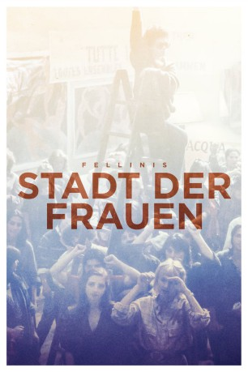
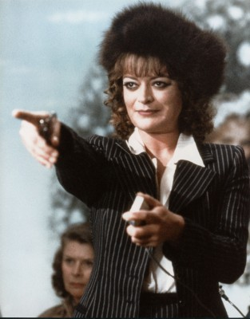
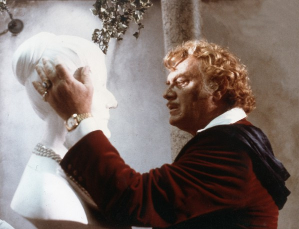

#10435 Fellinis Stadt der Frauen
Alternativ: City of Women (Englischer Titel)
 
 IMDB-Wertung: 7.0 / 10
IMDB-Wertung: 7.0 / 10  Metascore: 0
Metascore: 0 
Fellini-Film aus dem Jahr 1980. Frauenheld Marcello Snàporaz trifft im Zug eine wunderschöne Frau, der er bis in ein Hotel folgt. Wie sich herausstellt, findet dort gerade ein Kongress von Feministinnen statt, für die Marcello ein gefundenes Fressen ist.
Jahr: 1980
Dauer: 140 Minuten
FSK: 18
Land: Italien Studio: Arthaus FilmverleihTonspuren:
Untertitel:
Auflösung: 1080p (1920x1040) Größe: 10065 MB
Genre: Drama, Komödie, Fantasy
Regisseur: Federico Fellini
Drehbuch: Federico Fellini, Bernardino Zapponi, Federico Fellini, Bernardino Zapponi, Brunello Rondi
Soundtrack: Luis Bacalov
Darsteller:
 Marcello Mastroianni als Snàporaz
Marcello Mastroianni als Snàporaz- Anna Prucnal als Elena
-  Bernice Stegers als Woman on train
- Donatella Damiani als Donatella (Woman on roller skates)
-  Ettore Manni als Dr. Xavier Katzone
- Gabriella Giorgelli als Fishwoman of San Leo
- Dominique Labourier als Feminist
- Penny Brown als Feminist (uncredited)
 Omero Capanna als Motorcycle Woman (uncredited)
Omero Capanna als Motorcycle Woman (uncredited)- Fernando Cerulli als Italian Husband (uncredited)
- Milly Corinaldi als Feminist (uncredited)
- Mirella D'Angelo als Mock Bridegroom (uncredited)
- Gabriella Di Luzio als (uncredited)
- Marina Hedman als First Girl of 'Giro della Morte' (uncredited)
- Malisa Longo als Second Girl of 'Giro della Morte' (uncredited)
 Nello Pazzafini als Roberto Padone (uncredited)
Nello Pazzafini als Roberto Padone (uncredited)- Brigitte Petronio als Guard (uncredited)
- Josiane Tanzilli als Chanteuse (uncredited)
- Stavros Tornes als (uncredited)
- Jole Silvani als Motorcyclist
- Fiammetta Baralla als Oliver Hardy
- Hélène Calzarelli als Feminist
- Catherine Carrel als Commandant
- Marcello Di Falco als Slave
- Silvana Fusacchia als Skater
- Stéphane Emilfork als Feminist
- Sylvie Matton als Feminist
- Meerberger Nahyr als
- Sibilla Sedat als Judge
- Katren Gebelein als Enderbreith Small
- Alessandra Panelli als Housewife
- Nadia Vasil als Feminist
- Loredana Solfizi als Black Feminist
- Fiorella Molinari als Punk
- Rosaria Tafuri als Dancing Girl
- Sylvie Wacrenier als Feminist
- Carla Terlizzi als Dr. Katzone's Conquest
- Jill Lucas als
- Vivian Lucas als
- Rose Alba als (uncredited)
- Isabelle Canto da Maya als (uncredited)
- Annamaria Chio als (uncredited)
- Marina Confalone als Feminist (uncredited)
- Catharina Dahlin als Dr. Katzone's Maid / Stan Laurel (uncredited)
- Franco Diogene als Party Guest (uncredited)
- Stefan Liberski als (uncredited)
- Stéphanie Loïk als (uncredited)
- Cesare Martignon als Party Guest (uncredited)
- Maïté Nahyr als Feminist (uncredited)
- Mimmo Poli als Party Guest (uncredited)
Datei: X:\1980\Fellinis Stadt der Frauen (1980, FSK18, 1920x1040).mkv seit 07.01.2019
Festplatte: HD 1980-1986
 Es gibt insgesamt 33 Filme in der Gruppe '1980'
Es gibt insgesamt 33 Filme in der Gruppe '1980'